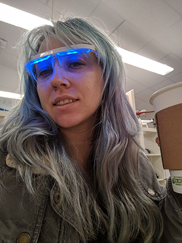

- #Home
- #About
- #Portfolio

Technology has always been a huge part of my life, specifically the internet. Because of this, my work focuses on how past and current technologies have affected the human experience. By prying into this subject matter, I hope to expose the deeper connection that lies within this beast. Allowing the individual that is viewing my work to think more about their connection to the technological world. How for most of us this world has slowly been taking over our lives and what we can do to reign it in and take control of its current state.
Currently I am persuing a MFA at San Jose State University in Digital Media Art, hoping to gain an even deeper knowledge on how we can utilize the technology around us. And hopefully by brining trending technology to convey deeper meanings I will be able to express different viewpoints of various technology related topics.
Past Exhibits
//RiPi// 2017 // SJSU // In charge of creating captive portal to display the works net.art
//Stamped Out// 2017 // SJSU // Head of AR implimentation
//Senior Winter Showcase // 2017 // Cadre Lab // Head of Content Creation
//C.H.O.I.C.E// 2018 // Hammer Theatre // Participant
//Thing of Internet// 2018 // SJSU // Solo Show
//Queue our Codes// 2019 // SJSU // Group Show
Contact: Lcnein@gmail.com